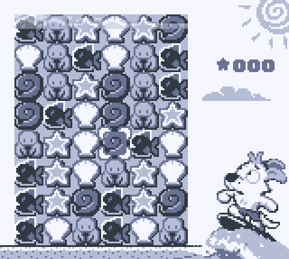
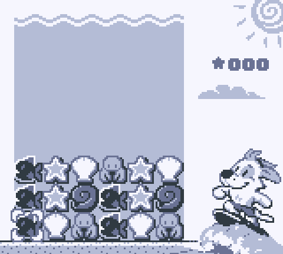
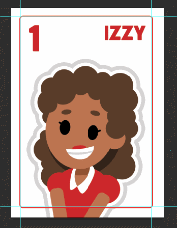

malamute
NEWSLETTER - JUNE 2024
juicing the game, making a website
So, I made this little website for my games and also for the newsletter. HTML was a much better way to do it with more control and the ability to embed and hotlink content I'd like to show. It really only took a few hours to get it all up and running. Compared to Game Boy programming its beautifully flexible.
On that note, I've been working on the final polish for my match-4 puzzle game Patchy Matchy, which includes a whole lot of bug hunting and presentation work. This is a really important part of the process because it makes the difference between a game being visually charming and cute or simple and functional and possibly unimpressive. I get to apply what I know about making appealing motion and visual fun directly to the UI and mechanics of the game. In the industry this is called "juicing" the game, to make the experience savoury. Here are a few of the little visual things I've been working on.... |
 |  |
The little sprite pop-in and auto dissolve on the title screen removed the need for a 'push start' prompt. A quick and fun game end animation for 'Wipeout!' where you can see Patchy throw up his hands before the wave overcomes the screen was the best ending to a tense round that I thought I could execute well. There's still a little visual glitch in there but I have a bit of time still to get that ironed out. The other features were things like bubbles, waves, water, and animations on Patchy himself. I really am trying to pack as much fun and polish into 32 kilobytes as I can.
You can pre-order a cartridge of Patchy-Matchy from ModRetro, as a launch title for their new console, the Chromatic. The cartridge is also fully Game Boy compatible. You can also get it as part of their launch bundle. It should ship out in December!
meanwhile
I am not a huge fan of generative AI, for ethical and professional reasons. I could talk about its possible mispercieved role in animation but I feel like I'd be preaching mostly to the choir and it would take too long to assemble the sources to do it justice for this month. Angela Collier, a science youtuber, posted this scathing review of the economic optimism around AI and how it is by and large wholly unfounded, entirely useless if not harmful, and the way corporations are latching onto it (much like they did with NFTs) to attempt to boost their stock profile. She is smart and funny and I highly recommend watching.
stuff from tom
This month was mostly a whole lot of work on Paw Patrol. I took a little time off last month to visit with family and was playing catch up all month. Starting next month I'll be saying goodbye to episodes and working on a different Paw Patrol production for a while. The team I partly oversaw was about 20 people, but I shared that responsibility with 3 other leads. On this next show I'll be directly overseeing a group of about 12. This probably means less animating and more direct lead tasks like Maya tools, troubleshooting, and training. I think this means I'll continue to be pretty busy fora couple weeks but once the team gets into the swing of things I'll be able to go back to spending more time on my own creative projects.
I did recently release the rules to a card game I invented. Its called "Pocket Nobles" or "Office Politics", and the gist of it is that you and the other player are both bidding 1-10 on cards in an attempt to get face cards for points. While I made a custom deck for myself, the game can be played with a deck of regular playing cards. I've uploaded the rules here if you'd like to try it out. Its for two players and takes about 5 minutes to play a round.
Here are the rules. I will upload the card game to itch.io as a print-and-play. Once I get around to formatting the cards and rules.
shoutout
If you're looking for some amazing pixel art, I highly recommend following my friend Tofu. She has amazing art skill and channels it into her digital work showing a style and precision for pixel art thats truly exceptional. She recently released a really interesting "So You Want to Learn Pixel Art" post on her tumblr. I always thought her work is worth studying if you plan to go deeper into game art or digital mediums for yourself. Follow Tofu on Cara, on Twitter, or check out her other socials.
 |
 |
 |
 |
 |
 |
misc cool stuff
Squash and stretch instantly makes everything 70% better, at least #pixelart #gamemaker pic.twitter.com/yJrAtG9I3T
— Anders Gullmarsvik (@pxlitch) June 14, 2024
What I really like about this is the example of how much juice you can squeeze out of static images by knowing some of your aesthetic principles. Squash and stretch always adds a liveliness because it mimics organic forms, and it instantly makes things more visually interesting if they would otherwise be relatively static.
— madebyabra (@madebyabra) June 5, 2024
This extremely charming animation shows a lot of the things that I see every day as a part of my job. I love the chunky pixels and polys! Consider me down to clown.